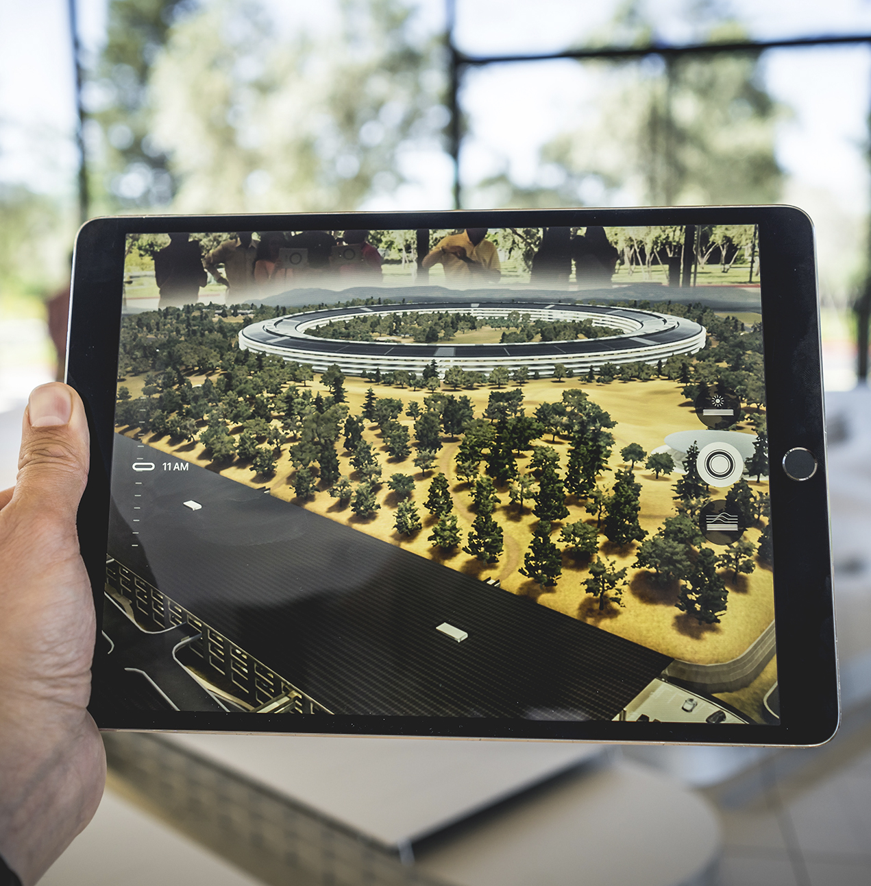

hola!
Hoy hablaremos de la realidad aumentada y la realidad virtual
de que se trata cada una y cuales son sus pros, contras
características de cada una y lo más importante, sus diferencias
Realidad aumentada
¿pero qué es?
La Realidad Aumentada (RA) se asigna la interacción entre ambientes virtuales y el mundo físico, posibilitando que ambos se entremezclen a través de un dispositivo tecnológico como webcams, teléfonos móviles (IOS o Android), tabletas, entre otros. En otras palabras, la RA insiere objetos virtuales en el contexto físico y se los muestra al usuario usando la interfaz del ambiente real con el apoyo de la tecnología. Este recurso viene revolucionando muy frecuentemente en la forma en que lidiamos con nuestras tareas (e incluso, en las tareas las que les asignamos a las máquinas).

Realidad virtual
¿de qué se trata?
Esta tecnología consiste en una interfaz disponible en un ambiente virtual que simula efectos sonoros, visuales y táctiles para engañar al usuario y hacerlo creer que aquellas interacciones ocurren en el mundo real. Con todos estos estímulos hay una inmersión total en este medio simulado. La tecnología está basada en displays estereoscopios, que incluyen los headsets y gafas. En buena parte de los casos, su uso está inclinado hacia el entretenimiento, pero hay muchas otras posibilidades como las ventas, el marketing, atención al cliente e incluso la gamificación de procesos.
¿Cuáles son las diferencias entre Realidad Aumentada y Realidad Virtual? Aunque tienen un nombre muy similar, sus características y objetivos son bastante diferentes. Mientras la Realidad Virtual crea un ambiente totalmente nuevo y desprendido del mundo real, la Realidad Aumentada incluye componentes digitales en el mundo físico que nos rodea. Ambas requieren de un intermediario tecnológico para accederlas, sin embargo, ofrecen experiencias totalmente distintas para los usuarios.